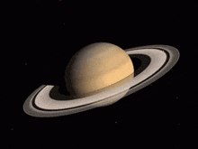
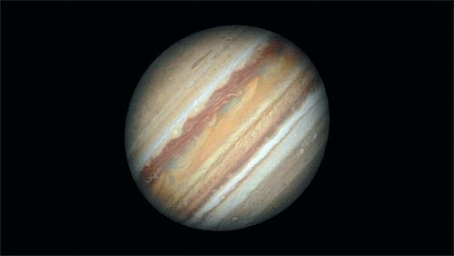
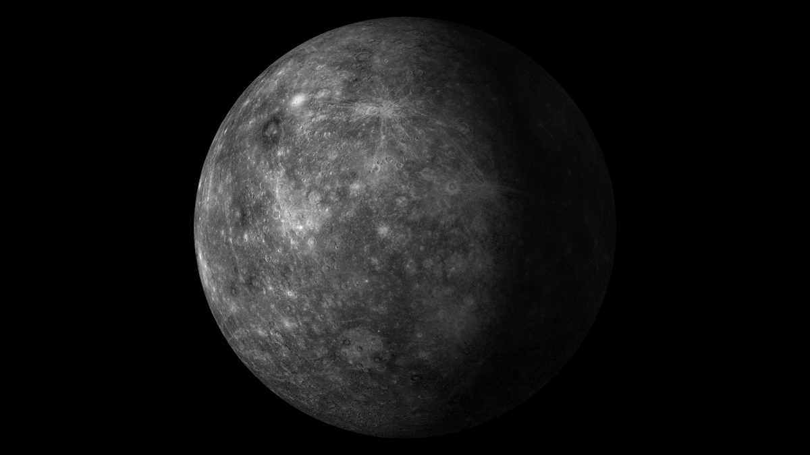

-
SATURN
Saturn is the sixth planet from the Sun and the second-largest planet in our solar system.
Known for its stunning ring system, made up of ice, rock, and dust, Saturn is a gas giant composed mostly of hydrogen and helium.
It has at least 83 moons, with Titan being the largest and one of the most intriguing due to its dense atmosphere and liquid methane lakes.
-
<Source: NASA Solar System Exploration - Saturn>

-
JUPITER
Jupiter is the largest planet in our solar system and the fifth planet from the Sun.
It is a gas giant primarily composed of hydrogen and helium, with a massive, swirling atmosphere that features the iconic Great
Red Spot—a giant storm larger than Earth that has lasted for centuries.
Jupiter has at least 92 moons, with the four largest—Io, Europa, Ganymede, and Callisto—known as the Galilean moons,
offering unique features like volcanic activity and subsurface oceans.
-
<Source: NASA Solar System Exploration - Jupiter>


-
MERCURY
Mercury is the smallest planet in our solar system and the closest to the Sun.
Despite its proximity to the Sun, Mercury has no atmosphere to retain heat, leading to extreme temperature
variations between day and night.
Its surface is heavily cratered, resembling the Moon, and it has a very thin exosphere composed of oxygen, sodium,
and hydrogen.
Mercury has a unique orbit and rotation, completing three rotations for every two orbits around the Sun.
-
<Source: NASA Solar System Exploration - Mercury>